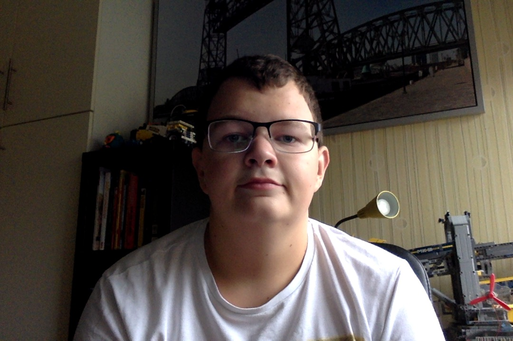

Wie is Leon Suijkerbuijk?
 Mijn naam is Leon Suijkerbuijk, ben op 30 januari 2003 geboren. En ben nu 15 jaar oud.
Mijn interesses zijn treinen, video's editen en programmeren.
Hiervoor heb ik het Insula College MAVO gezeten.
Ik heb daar een leuke tijd gehad. Aardige leeraren, weinig gezeur of problemen.
Daarvoor op de basisschool Het Kristal gezeten.
Ook daar voor de meeste tijd veel plezier gehad. Soms iets slechter dan andere keer.
Bijbanen heb ik nog niet gehad. Ga binnenkort wel medicijnen bezorgen bij mij in de wijk. Niet iets bijzonders.